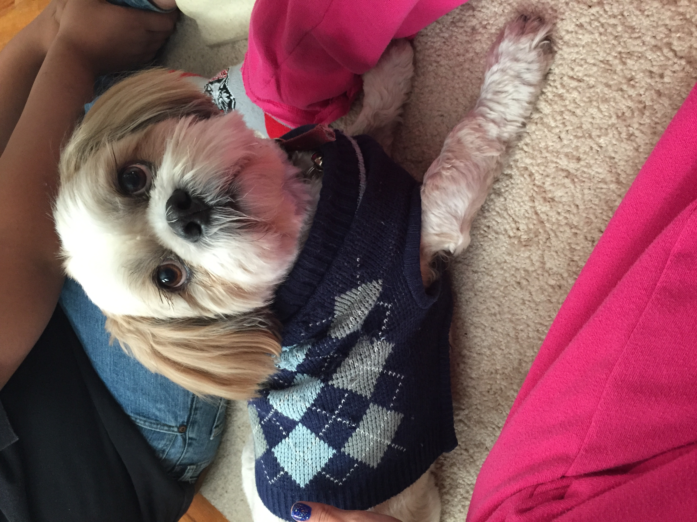

Common Traits of Shih Tzu's

According to the
American Kennel Club
, there are common traits among Shih Tzu's. Some of these include:
-
They're an affectionate breed with people, outside of their
owner.
- They're good with young children.
- They get along well with other dogs.
- They have virtually no shedding.
- They require a lot of grooming.
-
They're a highly adaptable dog when it comes to changes in
environment and routine.
-
They're meant to be house companions ans require minimal daily
exercise to stay happy and healthy.